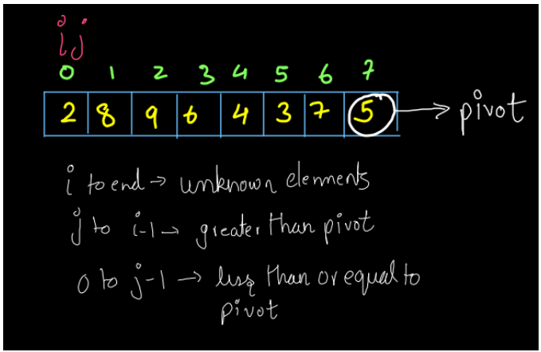
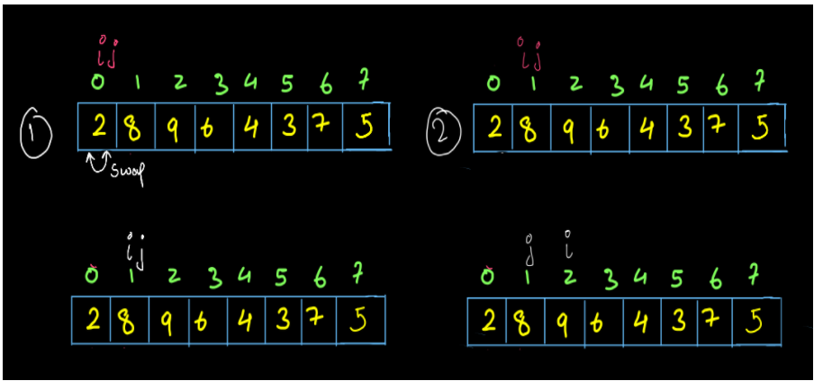
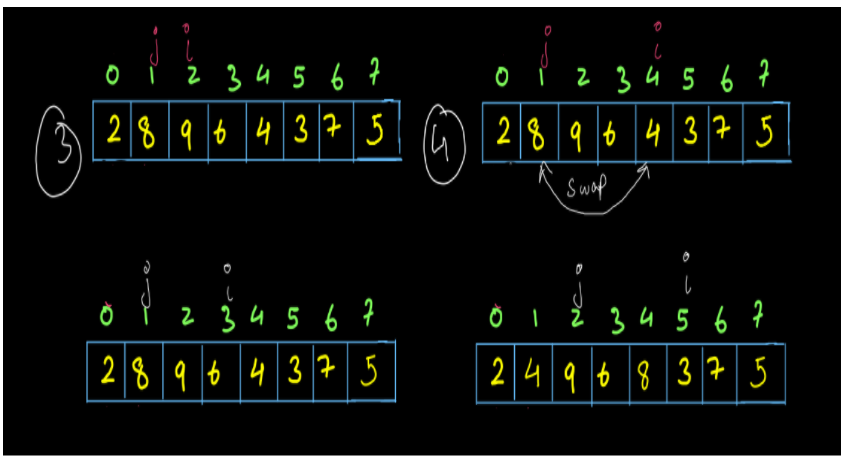
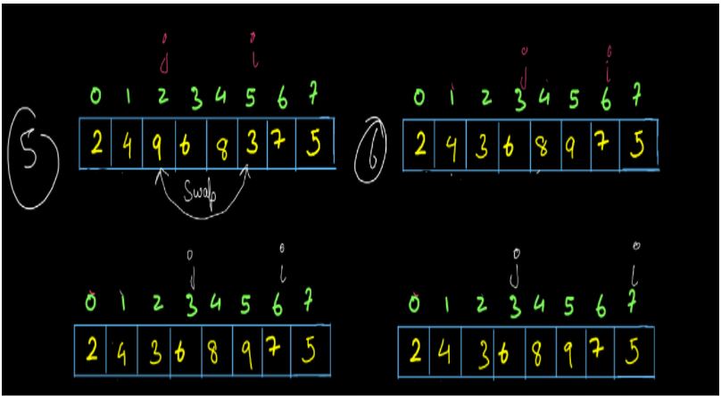
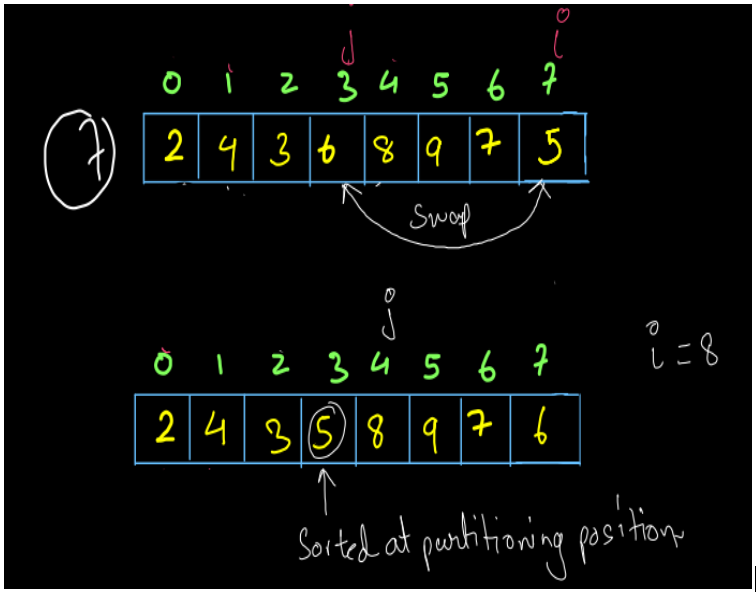
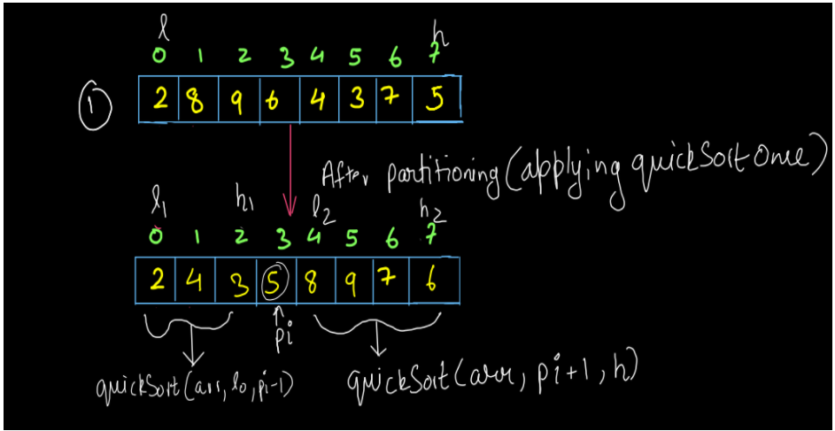
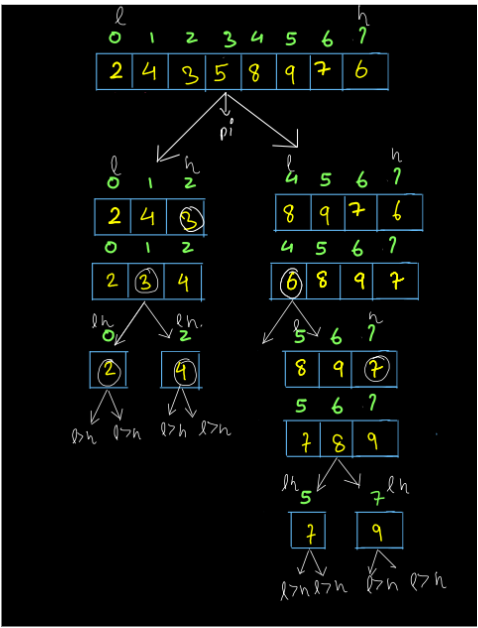
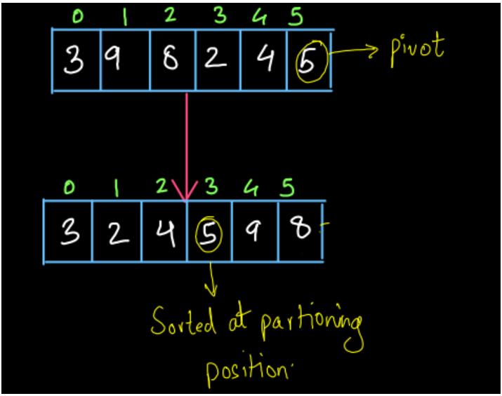
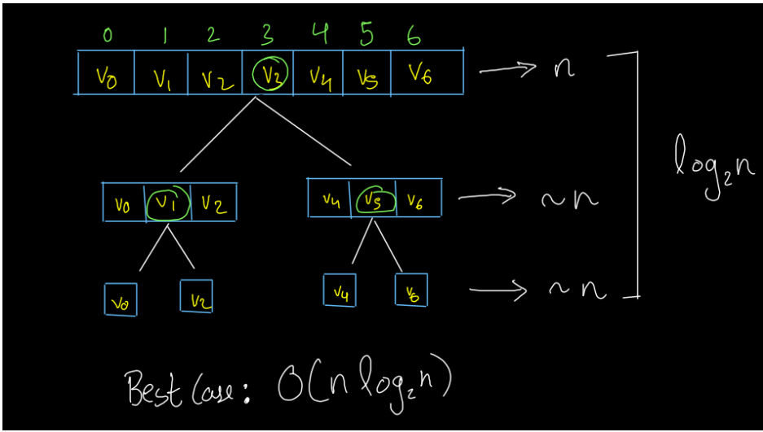
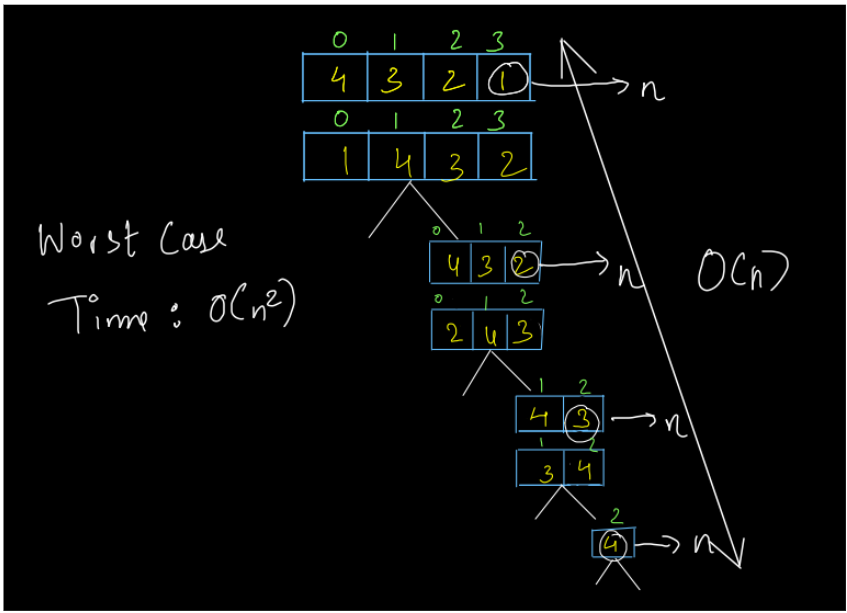

So, we are given an array of integers and we have to solve it using the Quick Sort Algorithm. We recommend you solve the PARTITION AN ARRAY question before moving on with the quick sort algorithm as the partitioning procedure is the basis of the quick sort algorithm. So, let’s start with our discussion.
Welcome back, dear reader. So, how is it going? Are you ready to face the next question? Let’s see what the question is all about.
Important links: Solution video .
Now we are ready to discuss the question.
UNDERSTANDING THE PROBLEM
APPROACH
- Partitioning Procedure: Dear reader, we recommend you solve the PARTITIONING AN ARRAY question first, as it is the basis for this problem. Also, if you have any doubts regarding it you may refer to the solution video for the same. Now, let us discuss the overview of the partitioning procedure first, then we will move to the application of quicksort. Have a look at the diagram given below:
Here, ‘i’ and ‘j’ variables are kept at the beginning of the array. We have written the conditions below. These conditions are:
- The elements between i and the last index of the array (i to end) must be the unknown elements meaning we don’t know their values in comparison to pivot i.e. we don’t know whether they are small or greater than the pivot.
- The elements between j to i-1 will be the elements larger (in values) than the pivot.
- The elements from 0 to j-1 will be smaller than or equal to (in values) than the pivot.
- Since i=0, elements from ‘i’ till the end are all unknowns i.e. all the elements are unknown to us right now.
- Since j is also zero, we do not have any element greater than pivot right now and the same is the case for smaller elements i.e. we do not have any smaller element than pivot initially.
Iterations:- The first and second iterations are shown in the figure above. Since arr[i]< pivot, we swapped arr[i] and arr[j] but, ‘i’ and ‘j’ were at the same position so the swapping is not noticeable. Then after swapping we increment both ‘i’ and ‘j’ variables. In the second iteration since arr[i]>pivot, no swapping takes place and only ‘i’ increments.
Similarly, the iterations 3-6 are shown in the diagrams below. We recommend you go through all the iterations by yourself. - Now, we come to the final iteration. Here, ‘i’ reaches the end of the array, and j reaches index 3. Since ‘i’ reached arr.length, we will stop our iterations now. If you notice, in the diagram shown below, pivot=5 is sorted at its position which is called partitioning position i.e j-1. So, the final partitioning position will be j-1.(refer to fig-6)
 - Quick Sort: Now that we know about the partitioning procedure completely, we are going to use it to perform the quick sort. Let us do some high-level thinking which is applied before writing this code.
- Expectation: We expect that the quicksort function will give us a sorted array. If we provide it with the low and high of the array, it will sort the array starting from low index up to high index. The function call will look like this: quickSort(arr,lo,hi).
- Faith: We have faith that recursion can sort a smaller size array. The array is of smaller size if the difference between low and high of the array is less than the difference between low and high of the array given to us. So, the calls quickSort(arr,lo,pi-1) and quickSort(arr,pi+1,hi) are based on this faith. Now the only thing left to solve this problem is a base case that we need to find to stop the recursion. For that, we will do some low-level thinking. Have a look at the diagram given below:
The diagram shows the above high-level thinking process in a nutshell. This is what we are trying to do exactly. We brought 5 to its sorted position by applying quicksort once and as quicksort has a partitioning procedure as its first line of code, it is the partitioning procedure actually, which is bringing 5 to its sorted position. Now, if we apply quicksort recursively, we can visualize it as 2 arrays. One with low 1 (l1) at index 0 and high 1 (h1) at index=pi-1, where pi is the partition index. The other array, with low 2 as its low value (l2) and high 2 (h2) as its high value, where l2=pi+1 and h2=h.
Since the difference between the highs and lows of these arrays is smaller than the required array, our faith in recursion holds and we can assume that our array will get sorted. Now, the question is what is the base case. So, have a look at the diagram given below:We have already partitioned the array once. Now, we apply quicksort recursively. After this, the array gets divided into two halves and quicksort is applied to them individually. The low and high values for each half are shown in the diagram. The first half i.e. [2,4,3] has low at index 0 and high at index 2. After applying the partitioning procedure, the array becomes [2,3,4] i.e. 3 is at its sorted position. Since there were only three elements in this case and arrangement of these elements was such that the entire part of the array (from 0 to 2) gets sorted. Still, low is less than high and we can apply quick sort once more. So, the array again gets divided into two parts and each part has only one element. So, it is our wish now to apply or not to apply quicksort on this as neither of them will make any difference. Why is this? Because if there is only one element in the array, then it is already sorted. Similarly, you can trace all the calls of the right part of the first call i.e. [8,9,7,6] yourself.
So, when are we stopping? What is the base case? When either there is only one or no element remaining in the array i.e. when low is greater than or equal to high, we have to return.
Base Case: low is greater than or equal to high (l>=h).
You may refer to the solution video (4:36-8:55) to understand the above process if you have any doubts regarding this. Now that we know the entire process and the base case, we can now write the code.
Algorithm:
- Partitioning Procedure: We will apply the partitioning procedure on the last element of the array and we get that element at its sorted position. (Look at the diagram given below)
We applied the partitioning algorithm on 5 and we got it at its sorted position. After the partitioning method, the elements smaller than 5 are arranged before 5, and the elements greater than 5 are arranged after 5. Though they are not sorted, we still have 5 at its sorted position.
- Recursive Quicksort: We have applied the partitioning procedure on the last element of the array. We can also apply it to every element inside the array. We will call the partitioning procedure inside the quicksort function and recursively apply the quicksort on the left and right sides of the partitioning position every time. How? Think about it, we will discuss this in the explanation section.
COMPLETE CODE
Now that we have understood the algorithm and its working we try to write the code for the same.
import java.io.*;
import java.util.*;
public class Main {
public static void quickSort(int[] arr, int lo, int hi) {
if(lo>=hi)
{
return;
}
int pivot=arr[hi];
int pi=partition(arr,pivot,lo,hi);
quickSort(arr, lo, pi-1);
quickSort(arr, pi+1, hi);
}
public static int partition(int[] arr, int pivot, int lo, int hi) {
System.out.println("pivot -> " + pivot);
int i = lo, j = lo;
while (i <= hi) {
if (arr[i] <= pivot) {
swap(arr, i, j);
i++;
j++;
} else {
i++;
}
}
System.out.println("pivot index -> " + (j - 1));
return (j - 1);
}
// used for swapping ith and jth elements of array
public static void swap(int[] arr, int i, int j) {
System.out.println("Swapping " + arr[i] + " and " + arr[j]);
int temp = arr[i];
arr[i] = arr[j];
arr[j] = temp;
}
public static void print(int[] arr) {
for (int i = 0; i < arr.length; i++) {
System.out.print(arr[i] + " ");
}
System.out.println();
}
public static void main(String[] args) throws Exception {
Scanner scn = new Scanner(System.in);
int n = scn.nextInt();
int[] arr = new int[n];
for (int i = 0; i < n; i++) {
arr[i] = scn.nextInt();
}
quickSort(arr, 0, arr.length - 1);
print(arr);
}
}
input
output
Run code
Note Dear reader, to submit this solution on our portal, you will have to consider that low is strictly greater than high i.e. when you apply the base case you have to write (lo>hi) rather than (lo>=hi). There is nothing wrong with lo>=hi, it is just that the solution at our portal is such that we want you to apply quicksort even when only one element is remaining.
Analysis
Time Complexity
Look at the image given below:

Best Case: The above diagram shows the best case complexity of quicksort. When the partitioning happens always in the middle, then the recursion tree or Euler tree that we get is a balanced binary tree. The height of a balanced binary tree is O(log2n). Since we are partitioning at every level, partitioning takes O(n) time, so, the best case time complexity becomes O(n X log2n) as partitioning time is O(n) and we are doing it for O(log2n).
Interesting Fact: For the best case of quicksort, we want the partitioning to happen always in the middle. This can only be achieved if the element we are selecting as the pivot is always the median in the remaining part of the array. But, we cannot find the median until we have a sorted list. So, there is no way we can achieve the best case every time. It just depends on the order of elements in the input.
Worst Case: Have a look at the diagram given below:

The above diagram shows the worst-case time of quicksort. When the elements are sorted in the reverse order, we obtain a right-skewed binary tree whose height is of order O(n). Since partitioning is taking place at every level and it takes O(n) time, the total time complexity becomes O(n X n) i.e. O(n2).
Interesting Fact: The worst-case time of quicksort is when we get a sorted list. If the list is sorted in the correct order, we get a left-skewed binary tree, else if it is sorted in reverse order, we get a right-skewed binary tree. Both of them are of height O(n) so, the time complexity for the worst-case becomes O(n2).
Average Case: We know that if the tree is not left or right-skewed then on average the height of a tree is O(log2n). So, the average case time of quicksort is also O(n X log2n).
Space Complexity
Since we have not used any extra space, the space complexity of the above solution is O(1).
So, dear reader, we hope that you enjoyed this topic and understood the time complexity analysis and the code well. Still, if you have any doubts about the code or the quicksort procedure, you may refer to the complete solution video to clear all your doubts.
Some Suggestions:
Here are some suggestions from our side that you do not want to miss:
- We have discussed the worst-case time complexity above. So, can we avoid this worst-case complexity in any way? Yes, we can. Before applying quicksort whether the array is sorted or not, we can avoid the worst-case complexity. If the array is sorted as we want it to be, we let it be sorted and do not apply quicksort, else if it is reversely sorted, we reverse the array. We suggest you implement this idea yourself in your code.
- Another way of avoiding the worst-case time is not to select the last element as pivot always as if the array is sorted the pivots also get selected in sorted order causing the partitioning to occur at one end of the list and making the time as worst-case time. So, we can select any element from the array randomly, to avoid pivot selection in sorted order. This is called randomized quicksort. We suggest you try to implement this yourself.
- Also, compare both the above methods, which one reduces the worst case time better? Think and analyze!!!!
Till then,
Happy Coding!
Next
Back
AUTHOR

Guneet Malhotra